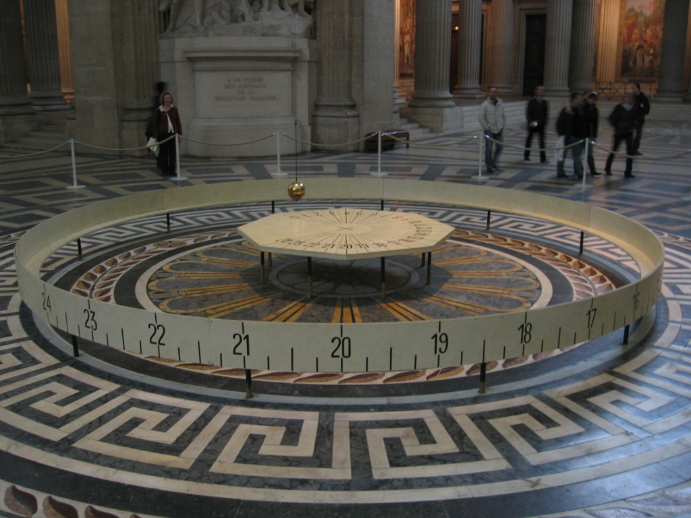
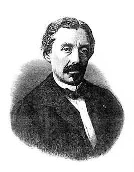

-

Маятником Фуко называют массивный груз, подвешенный на нити большой (несколько десятков метров) длины.
Особенностью маятника Фуко является его способ крепления в подвесе. Обычно его закрепляют в опоре с
помощью карданова шарнира, исключающего закручивание нити. Такой маятник служит преимущественно для
демонстрации суточного вращения Земли. В результате вращения Земли плоскость колебаний маятника медленно
поворачивается относительно земной поверхности.
-

Жан Бернар Леон Фуко (18 сентября 1819, Париж — 11 февраля 1868, Париж) — французский физик, механик и
астроном, член Парижской Академии наук. Известен прежде всего как создатель маятника Фуко и изобретатель
гироскопа.